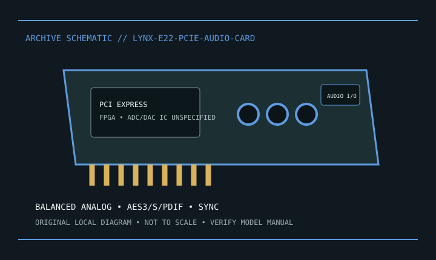

[ INDIVIDUAL MODEL // SOUND HARDWARE ]
Lynx Studio Technology E22
E22 PCIe stereo analog/digital I/O card with onboard FPGA mixer; converter IC part numbers are not disclosed in cited model docs.

Model-specific specifications
| Exact model / identity | E22 PCIe stereo analog/digital I/O card with onboard FPGA mixer; converter IC part numbers are not disclosed in cited model docs. |
|---|---|
| Audio processor / codec / DAC | Lynx FPGA mixer/clocking; manufacturer documents 2-channel ADC and DAC operation but does not identify the converter IC model numbers. |
| Channels / resolution / sample rate | 2 analog input and 2 analog output channels; 2 channels AES3 or S/PDIF digital I/O; 24-bit resolution up to 192 kHz. |
| Analog and digital ports | Balanced analog I/O through CBL-L22Audio breakout; AES3/S/PDIF and sync/clock through appropriate cable. Cables may be separate accessories. |
| Slot / host interface | PCI Express card; verify fit/keying for board revision and motherboard and use Lynx-specified breakouts. |
| Operating-system support | Lynx publishes Windows and macOS driver packages for E22; verify driver version, OS and firmware for the actual hardware revision. |
Compatibility & preservation
Not the E44. Analog/sync breakouts are accessories. Do not infer ADC/DAC chip numbers not disclosed by cited manufacturer sources.
- Photograph the card label, board revision, bracket connections and included accessories before service.
- Retain the exact driver, firmware and operating-system version known to work with this model.
- Confirm slot fit, connector pinout, breakout hardware, channel mode and supported sample rate before integration.
Manufacturer sources
- Lynx E22 Rev C — official product specificationsManufacturer product, technical specification, or model manual source.
- Lynx E22/E44 — official user manualManufacturer product, technical specification, or model manual source.
- Lynx E22 — official drivers and downloadsManufacturer product, technical specification, or model manual source.